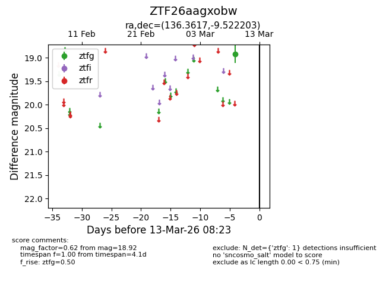
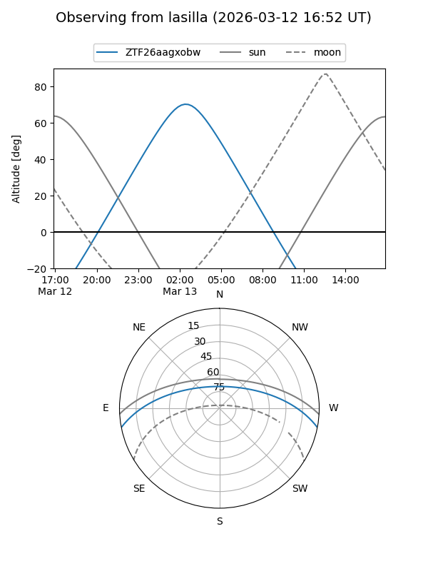
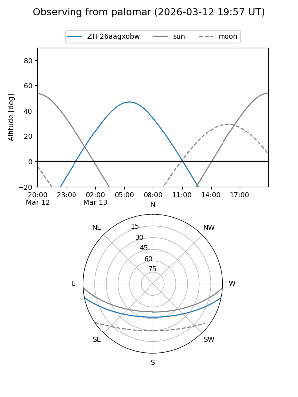

ZTF26aagxobw
Target ZTF26aagxobw at 2026-03-13 08:25
Aliases and brokers:
FINK: link
Lasair: link
ALeRCE: link
alt names
ZTF26aagxobw (ztf,fink_ztf)
Coordinates:
equatorial (ra, dec) = 136.3617,-9.52220
equatorial (HMS+DMS) = 09:05:26.80,-09:31:19.93
galactic (l, b) = (238.6132,+24.14477)
Flags:
Photometry:
last ztfg=18.92
1 ztfg detections
Lightcurve

Visibility


Additional plots